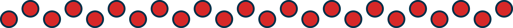

About Me

My name is Thomas (Tommy) Mattson. I am currently attending Westmont College, pursuing a BS in Data Analytics and a BA in Economics & Business. In my free time I enjoy listening to books & podcasts, spending time outdoors, and working on various finance & tech(Salesforce) projects.
About the Project
This game was created following a video series by Dr. Don Patterson at Westmont College. This is implementation of an interactive web-application of the game Reversi (very very similar to the popular game "Othello"). This project is hosted by Heroku and built with Javascript, JQuery, HTML, and CSS.